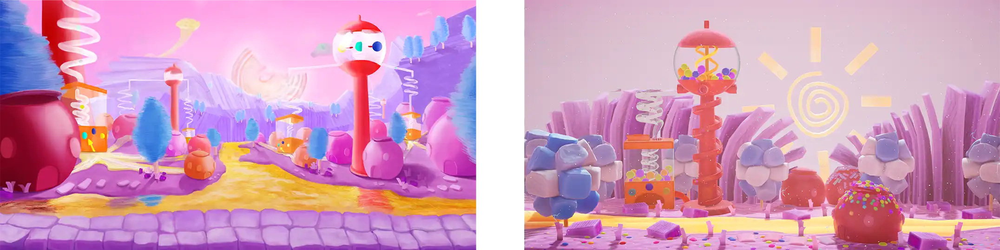
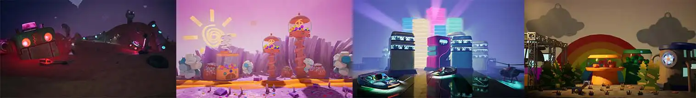

GEORIFTERS
UI/UX design for a co-op puzzle game published on Nintendo Switch, PS4, Xbox, and Steam — built for controller navigation and an 80s-inspired aesthetic.

Georifters is a console puzzle game for up to 4 players, with single, team-up, and battle modes. It was developed by Playerium and published across Steam, Nintendo Switch, PS4, and Xbox.
As part of the 2D design team, my responsibilities spanned lighting, environment concept, UI/UX design, and video editing. The 2D team started from UI design first, then gradually joined the UX design process — working within a prototype that resembled a sitemap rather than starting from user research.
Console UI presents a distinct set of constraints: players navigate with a limited number of controller buttons, every interaction must feel responsive and readable at TV distance, and the system needs to accommodate future DLC and updates without a full redesign.
Use visual elements from the 80s to establish a consistent, memorable aesthetic
Control UI performance — keeping animations smooth without sacrificing visual richness
Preserve extensibility for future updates and DLC without requiring structural redesigns
The design process began with art style exploration — we needed to define a visual direction that was achievable within the team's production capacity and timeline. After evaluating options, we selected a 2D comic style for its balance of expressiveness and production efficiency.
Style exploration

Controller navigation has far fewer input options than keyboard/mouse. Every screen had to work with directional input, a confirm button, and a back button — making clear focus states and minimal action depth non-negotiable.
Beyond internal testing, the company arranged external usability studies. Participants filled out questionnaires covering overall experience, operation difficulty, and UI/UX feedback — all tracked in JIRA for the team to review and prioritize.
Design system
Once the art style was established, we standardized the typeface, color palette, and material treatment across all UI elements.

Mockup demo
Mockup videos were provided to engineers alongside the Techboards, so the intended motion and state transitions were unambiguous.
Character selection — before & after


Visual design
Beyond UI, I contributed to environment and character design — including the candy world theme that became the main character Candy's hometown.



Lighting
I lit 4 daytime scenes and 5 night scenes across the game's environments.

Video editing — Hero Spotlight series
Console game UI has constraints that don't exist in web or app design — controller buttons, TV viewing distance, and frame-rate performance are all design constraints, not just engineering ones.
Working across disciplines (UI, concept art, lighting, video) over 22 months gave me deep respect for how every element of a game contributes to the player's experience — and how design decisions ripple across teams.
Overcoming real constraints — limited inputs, strict performance budgets, future-proofing requirements — is where the most interesting design thinking happens. Restrictions focus creativity rather than limit it.